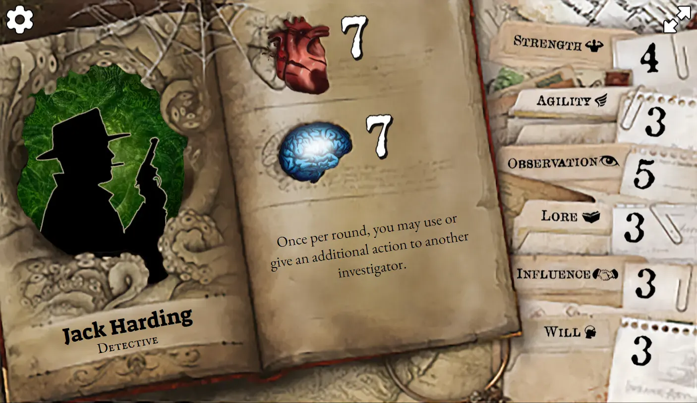
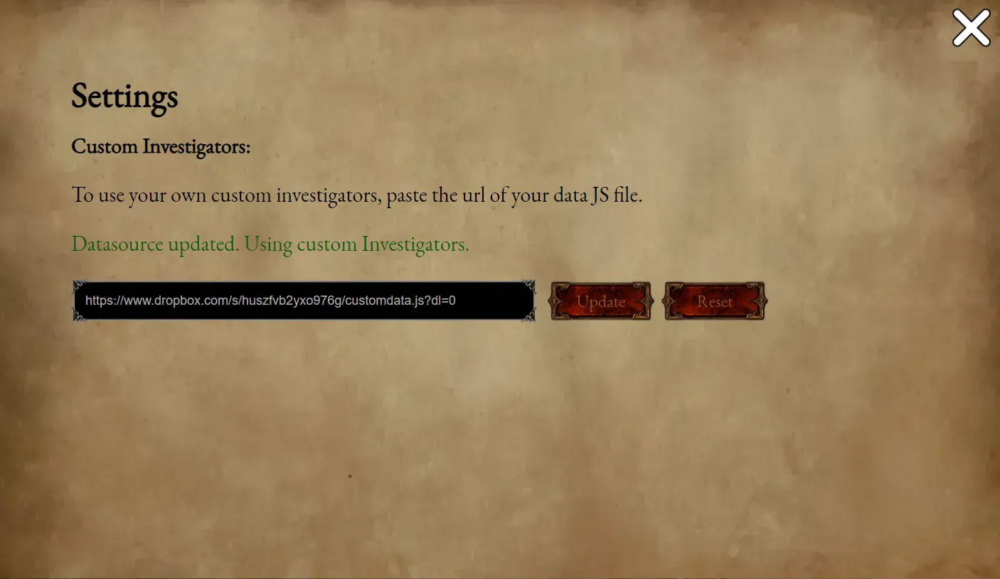

This web app was designed to bring a new range of unique and more balanced custom Investigators to play with Mansions of Madness: 2nd Edition. When playing, select an existing Investigator in the official MoM:2e app and substitute the character with one from this web app or your very own custom one (see below for more details). This app is free to use and designed to be viewed on mobile.
You can create and customize your own Investigators to use with the Web App by following the instructions below. Note, that there is a bit of leg work involved.
The datasource file is where the custom Investigator data is kept. It contains all the information, as well as the stats, abilities and attributes.
Start by creating an empty javascript file - customdata.js or download the example file: customdata.js
Copy and paste the Investigator data template from below (if creating a new file) into the newly created file or edit the example file.
{ "Investigators": [
{
"Name": "",
"Job": "",
"Image": "img/profile-generic-male.webp",
"Ability": "",
"Stats": {
"Damage": 7,
"Horror": 7
},
"Attributes": {
"Strength": 4,
"Agility": 3,
"Observation": 5,
"Lore": 3,
"Influence": 4,
"Will": 2
},
"Story": ""
}
]}
You can download and view the default preset data used by the Web App here: investigator-presets.js
Edit the Investigator data by adding in the profile data as well as the starting Stats and Attribute numbers. Refer to the below guide for more information.
In order for the Web App to be able to read and use your datasource file, you'll need to upload and host it somewhere. Dropbox is recommended.
Note: You could use other services but the Web App needs to be able to read the raw file so services like Google Drive or OneDrive won't work.
Any custom profile images can be uploaded to/hosted on any Image hosting service. A few examples of image hosting services below:
Now that you've got your custom datasource file hosted somewhere, you can copy and paste the url of the link into the Settings (cog icon) of the Web App and hit update. It should automatically update the Web App with your custom Investigator data.

Share the link to the Web App (https://zxcvea.github.io/mom2einvestigators) and a link to your datasource file. Get them to follow the above steps in Using your custom datasource file with the Web App.